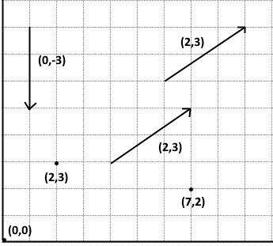
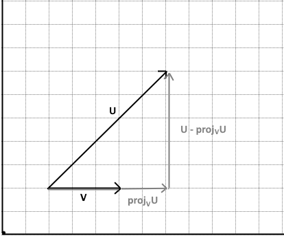
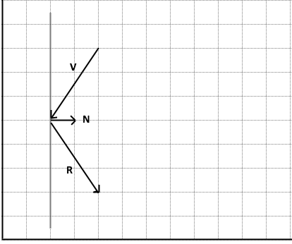

A vector is a tuple (1D array) containing up to 4 components (numbers), corresponding to the axis x, y, z, w.
It either represents a signed displacement (direction and magnitude) or a point in space.
Examples of 2D vectors:

Remember that displacement vectors don't have a position. They only define a position offset that can start from anywhere.
Our JS library will represent all vectors with DOMPoint.
v1 = new DOMPoint(); // default values: 0, 0, 0, 1
v2 = new DOMPoint(x, y); // 2D
v3 = new DOMPoint(x, y, z); // 3D
v4 = new DOMPoint(x, y, z, w); // 3D + w component
w is not a 4th spatial dimension but a homogeneous coordinate, useful when the vector gets transformed.
When a vector is a point: w = 1. When it's a direction: w = 0. More info in chapter 3 (vector-matrix multiplication).
// Addition
add = (u, v) => new DOMPoint(u.x + v.x, u.y + v.y, u.z + v.z, u.w + v.w);
// Subtraction
sub = (u, v) => new DOMPoint(u.x - v.x, u.y - v.y, u.z - v.z, u.w - v.w);
// Multiplication
mul = (u, v) => new DOMPoint(u.x * v.x, u.y * v.y, u.z * v.z, u.w * v.w);
// Scaling (s is a number)
scale = (u, s) => new DOMPoint(u.x * s, u.y * s, u.z * s, u.w * s);
Dot product (or scalar product or inner product), returns a number representing the relative angle θ between two vectors.
u . v = ||u|| ||v|| cos(θ)
If it's positive, the vectors point to the same direction. If it's negative, they have opposite directions. If it's 0, they're perpendicular.
dot = (u, v) => u.x * v.x + u.y * v.y + u.z * v.z + u.w * v.w;
Magnitude represents the length of a vector. It can measure the distance between two points.
Magnitude squared is also often used in caculations.
||v|| = √ v . v
||v||² = v . v
mag = v => Math.sqrt(dot(v, v));
mags = v => dot(v, v);
dist = (u, v) => mag(sub(u, v));
A normal vector (or unit vector) has a magnitude of 1 (or "unit length").
v̂ = v / ||v||
norm = v => scale(v, 1/mag(v));
A cross product (×) produces a vector perpendicular to a pair of vectors.
Your right hand's thumb represents the cross-product of the two following fingers, it is the default convention in WebGL. In a left-hand system, it would point to the opposite direction.
cross = (u, v) => new DOMPoint(
u.y * v.z - u.z * v.y,
u.x * v.z - u.z * v.x,
u.x * v.y - u.y * v.x,
0
);
θ = cos-1(u.v / ||u|| ||v||)
angle = (u, v) => Math.acos(dot(u, v) / (norm(u) * norm(v)))
projvu gives the parallel component of u (the length of u in the direction of v).
proj = (u, v) => mul(dot(u, v) / mags(v)) * v;
The perpendicular component can be deduced from it.
perp = (u, v) => sub(u, proj(u, v));

Reflection is the result of and bouncing a vector off of a plane, like a light ray on a mirror.
The plane is defined by a normal vector n perpendicular to it.

reflect = (v, n) => sub(v, scale(proj(v,n), 2));